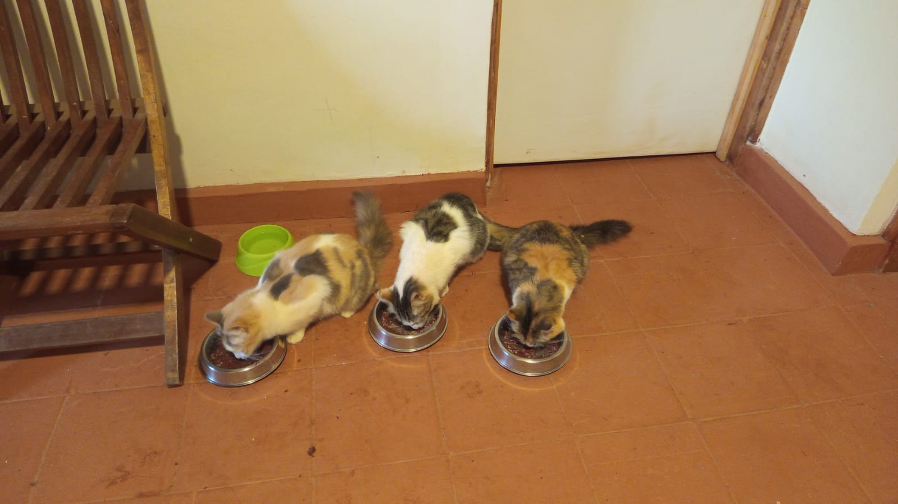

Mucheru World of Golf
Field civil works, agronomy rootzone layering, localized drainage corrections, bulk material deliveries, and reservoir replenishment operations across Mucheru World of Golf on Thursday, 5th November 2026 under the supervision of Mr. Gichuhi and Ken:
Golf Course Operational Highlights
Agronomy crews applied and leveled river sand across previously unapplied segments of Greens 10, 15, 16, and 18 to establish uniform rootzone depths over sub-base layers. Ground teams resolved drainage elevation issues at Green 10 so surface runoff discharges freely into the main drainage trench. Deliveries included one tipper lorry of river sand split between Greens 10 and 16, alongside one lorry of organic manure. Hydraulic inflows continued actively into Dam 2 and Dam 3 simultaneously, while Dam 1 intake was temporarily closed to sustain optimal pipeline pressure across the active filling lines.
- River Sand Layering on Greens 10, 15, 16 & 18: Field crews spread and leveled river sand across remaining unapplied sections of Greens 10, 15, 16, and 18, bringing all four putting surfaces toward uniform rootzone profile completion.
- Green 10 Gravity Drainage Trench Connection Rectified: Ground teams excavated and realigned the drainage discharge point at Green 10, correcting elevation issues so collected surface water flows smoothly into the main drainage trench.
- River Sand Delivery Split for Greens 10 & 16: One full tipper lorry of washed river sand was delivered to the course and evenly split between staging areas at Green 10 and Green 16 for immediate rootzone spreading.
- Bulk Farm Manure Delivery for Turf Establishment: One lorry load of organic manure was delivered on site to support upcoming soil enrichment and apron turf establishment.
- Simultaneous Dual Water Inflows to Dam 2 & Dam 3: Water intake pipelines actively filled Dam 2 and Dam 3 simultaneously, steadily expanding water reserves within both lined reservoir basins.
- Strategic Pressure Management on Dam 1 Intake: Inflow into Dam 1 was paused temporarily because running all three dam intakes simultaneously reduces line pressure below efficient levels, focusing full hydraulic flow on two dams at a time.
Field video recording documenting Thursday, 5th November 2026 operations at Mucheru World of Golf:
Field video recording capturing daily course civil works, green river sand application, drainage corrections, and reservoir replenishment at Mucheru World of Golf on Thursday, 5th November 2026.
18-hole putting green status audit showing the latest work completed and current condition for each green as of November 5, 2026:
| Green | Current Technical & Agronomic State | Milestone Status |
|---|---|---|
| Green 1 | Pop-up sprinklers confirmed functional and operational spray coverage verified (Oct 27). | Pop-Ups Functional |
| Green 2 | Pop-up sprinklers operational with pressurized spray coverage actively watering green (Oct 28). | Pop-Ups Functional |
| Green 3 | Electric solenoid valve installed on lateral line; river sand hauled to Green 13 (Oct 26). | Solenoid Installed |
| Green 4 | Pop-up sprinklers confirmed functional and operational spray coverage verified (Oct 27). | Pop-Ups Functional |
| Green 5 | Established mature championship putting green turfgrass watered with pop-up sprinklers (Oct 24). | Turf Irrigated |
| Green 6 | Drainage trench dug deeper, leveled, and shaped to secure gravity water flow (Nov 4). | Drainage Trench Leveled |
| Green 7 | HDPE irrigation supply trench cutting through Teebox 6 to Green 7 backfilled and covered (Oct 27). | Pipe Trench Covered |
| Green 8 | Electric solenoid valve installation and lateral pipe fitting completed on green (Oct 26). | Solenoid Installed |
| Green 9 | River sand hauled from stockpiles to Greens 12 and 16 for rootzone layering (Oct 29). | River Sand Hauled |
| Green 10 Today | River sand applied to unapplied segments and drainage issues fixed for trench gravity flow (Nov 5). | River Sand & Drainage Fixed |
| Green 11 | Pop-up sprinklers confirmed functional and operational spray coverage verified (Oct 27). | Pop-Ups Functional |
| Green 12 | River sand spread and leveled across putting green rootzone layer over sub-base (Oct 31). | River Sand Leveled |
| Green 13 | Pop-up sprinkler heights adjusted flush below apron level prior to apron leveling (Nov 2). | Sprinkler Height Adjusted |
| Green 14 | Pop-up sprinkler heights adjusted flush below apron level prior to apron leveling (Nov 2). | Sprinkler Height Adjusted |
| Green 15 Today | River sand applied to unapplied segments and leveled across putting green bed (Nov 5). | River Sand Applied |
| Green 16 Today | River sand applied to unapplied segments and leveled across putting green bed (Nov 5). | River Sand Applied |
| Green 17 | Pop-up sprinkler heights adjusted flush below apron level prior to apron leveling (Nov 2). | Sprinkler Height Adjusted |
| Green 18 Today | River sand applied to unapplied segments and leveled across putting green bed (Nov 5). | River Sand Applied |
18-hole championship teebox status audit tracking launch platform shaping, red soil leveling, and planting readiness as of November 5, 2026:
| Teebox | Current Technical & Earthwork State | Platform Status |
|---|---|---|
| Tee 1 | Irrigation pipe trenches excavated across platform along marked survey lines (Oct 26). | Pipe Trenches Dug |
| Tee 2 | Red soil applied halfway across platform; lateral pipe trenches backfilled (Oct 27). | Red Soil Halfway |
| Tee 3 | Red soil applied, spread, and leveled across platform; lateral pipe trenches covered (Oct 27). | Red Soil Leveled |
| Tee 4 | Irrigation pipe trenches excavated across platform along marked survey lines (Oct 26). | Pipe Trenches Dug |
| Tee 5 | Red soil spread and leveled across platform; lateral pipe trenches backfilled (Oct 27). | Red Soil Leveled |
| Tee 6 | Pop-up sprinkler heights checked and adjusted flush below teebox platform level (Nov 2). | Sprinkler Height Adjusted |
| Tee 7 | Pop-up sprinkler heights checked and adjusted flush below teebox platform level (Nov 2). | Sprinkler Height Adjusted |
| Tee 8 | Pop-up sprinkler heights checked and adjusted flush below teebox platform level (Nov 2). | Sprinkler Height Adjusted |
| Tee 9 | Surplus red soil hauled to Teebox 7 for platform shaping and surface leveling (Oct 29). | Red Soil Hauled |
| Tee 10 | Irrigation pipe trenches excavated across platform along marked survey lines (Oct 26). | Pipe Trenches Dug |
| Tee 11 | Electric solenoid valve installed on lateral irrigation supply line (Oct 27). | Solenoid Installed |
| Tee 12 | Unwanted rocks, stones, and waste cleared around both teebox platforms (Nov 4). | Rocks & Waste Cleared |
| Tee 13 | Electric solenoid valve installed on lateral irrigation supply line (Oct 27). | Solenoid Installed |
| Tee 14 | Pop-up sprinkler heights checked and adjusted flush below teebox platform level (Nov 2). | Sprinkler Height Adjusted |
| Tee 15 | Irrigation pipe trenches excavated across platform along marked survey lines (Oct 26). | Pipe Trenches Dug |
| Tee 16 | Pop-up sprinkler heights checked and adjusted flush below teebox platform level (Nov 2). | Sprinkler Height Adjusted |
| Tee 17 | Pop-up sprinkler heights checked and adjusted flush below teebox platform level (Nov 2). | Sprinkler Height Adjusted |
| Tee 18 | Irrigation pipe trenches excavated across platform along marked survey lines (Oct 26). | Pipe Trenches Dug |
Operations Agronomy & Engineering Synthesis
Course Agronomy & Earthwork Milestones: Agronomy teams applied and leveled river sand across previously unapplied sections of Greens 10, 15, 16, and 18; drainage connection issues at Green 10 were resolved to ensure unimpeded gravity waterflow into the main drainage trench; one lorry of river sand was delivered and split between Greens 10 and 16; one lorry of organic manure was delivered for turf cultivation; and day-to-day state continuity is preserved across all 18 greens and 18 teeboxes.
Hydraulic Infrastructure: Inflow pipelines actively filled Dam 2 and Dam 3 simultaneously to raise course water reserves; Dam 1 inflow was temporarily paused to maintain sufficient hydraulic pressure across the active filling lines.
Sequential photographic field documentation showing river sand spreading on greens, drainage corrections, manure and sand deliveries, and reservoir filling:

Green 10 — Aerial View of Leveled River Sand
Overhead drone perspective of Green 10 displaying the newly applied river sand bed and the drainage discharge trench in the foreground.

Green 10 — River Sand Spreading & Drainage Trench
Field workers spreading river sand across the green bed while a laborer works along the open trench aligning the discharge pipe.

Green 10 — Clearing Drainage Outlet to Main Trench
Ground crew utilizing shovels to clear gravel and red soil from the drainage invert, ensuring water flows freely into the main drainage corridor.

Green 15 — Aerial View of River Sand Application
Elevated drone view of Green 15 illustrating the freshly leveled river sand covering previously unapplied segments above the red soil collar.

Green 15 — Ground View of Spreading & Compacting
Ground-level perspective showing washed river sand distributed across the putting green surface to establish proper agronomic layer depth.

Green 16 — Aerial View of Rootzone Sand Layering
High-angle drone view of Green 16 highlighting the clean boundary between the graded red soil apron and the leveled river sand putting surface.

Green 16 — Rootzone Sand Spreading Progress
Close perspective of the putting green bed showing uniform distribution of river sand to cover unapplied segments over the sub-base.

Green 18 — Aerial View of River Sand Finishing
Aerial drone photograph of Green 18 showing workers hand-leveling river sand on the upper green bed adjacent to the lined water canal.

Material Delivery — Stockpiled River Sand
Clean mound of delivered washed river sand offloaded along the fairway boundary for application across Greens 10 and 16.

Material Delivery — River Sand Staged at Far Corridor
Second portion of the river sand delivery staged along the course corridor to support green rootzone layering.

Material Delivery — Manure Lorry on Site Access Road
Aerial view of the blue tipper truck carrying organic manure after momentarily losing traction on the soft unpaved access track.

Material Delivery — Manure Lorry Fairway Staging
Overhead drone perspective showing the loaded delivery lorry positioned beside the course rough preparing to offload organic manure.

Material Delivery — Organic Manure Truck Arrival
Delivery tipper truck arriving on site transporting bulk organic farm manure.

Material Delivery — Bulk Farm Manure Cargo
Open cargo bed of the lorry displaying rich organic manure for soil conditioning.

Material Delivery — Soil Fertilizer Delivery
Detail of bulk organic manure cargo delivered for course turf establishment.

Dam 2 — Aerial View of Active Inflow
Aerial perspective of Dam 2 inflow pipe filling the lined basin around the island.

Dam 2 — Ground View of Water Inflow
Water pouring steadily from the intake pipeline across the Dam 2 liner.

Dam 3 — Aerial View of Water Level
High-angle drone view of Dam 3 showcasing substantial water retention in the canal.

Dam 3 — Reservoir Basin Water Volume
Calm water surface accumulated inside the lined embankments of Dam 3.
Chaka Farms
Dairy milking production, goat shed roof and foundation repairs, canine unit conditioning routines, and field seedling cultivation at Chaka Farms on Thursday, 5th November 2026:
Farm Operational Highlights
Dairy production logged by Kamandau yielded an 8.5 Litres gross cow milk harvest (5.5L morning + 3.0L evening), 100% reconciled in Litres through 7.5 Litres commercial sales (4.5L morning + 3.0L evening) and 1.0 Litre in internal farm allocations (0.5L Gladys + 0.5L Maasai). Structural repairs overseen by Ken successfully completed the leaking roof restoration on the goat shed, initiated digging for new foundation support poles to correct structure imbalance, and slated the deteriorating access ramp for replacement. Willy conducted kennel sanitation, paw command exercises, and morning and afternoon off-leash walks. Margaret and Monica maintained compound cleanliness and cultivated growing maize seedlings.
- 100% Quantitative Reconciliation of 8.5 Litre Dairy Harvest: Morning (5.5L) and evening (3.0L) milking yielded 8.5 Litres gross harvest, fully accounted for by 7.5 Litres commercial sales, 0.5 Litres Gladys staff ration, and 0.5 Litres Maasai internal allocation with zero variance.
- Goat Shed Roof Leak Repairs Completed: Under Ken's supervision, repair teams successfully sealed and secured the leaking roof over the goat shed, restoring complete weather protection for the herd.
- Foundation Pole Excavation for Shed Balance: Workers initiated digging foundation post holes beneath the elevated goat shed to install sturdy new support poles and correct structural imbalance above ground level.
- Deteriorating Goat Shed Ramp Replacement Slated: Inspection confirmed structural wear and rot on the existing wooden entry ramp, prompting plans to demolish it and build a durable, reinforced replacement ramp.
- Canine Hygiene, Manners & Twice-Daily Off-Leash Walks: Willy maintained rigorous kennel stall cleanliness, executed structured kennel manners and paw command drills, and completed supervised morning and afternoon off-leash walks.
- Maize Seedling Cultivation & Compound Cleanliness: Margaret and Monica conducted thorough weeding and hand cultivation around young maize seedlings in the field while keeping farm compound pathways clean.
Official milking production and distribution reconciliation for Thursday, 5th November 2026, accounting for all commercial sales and on-farm allocations:
| Category / Transaction | Morning Session | Evening Session | Daily Total |
|---|---|---|---|
| Gross Cow Milk Harvested | 5.5 Litres | 3.0 Litres | 8.5 Litres |
| Commercial Milk Sales (Dispatched) | 4.5 Litres | 3.0 Litres | 7.5 Litres |
| Internal Farm Allocation — Gladys | 0.5 Litres | 0.0 Litres | 0.5 Litres |
| Internal Farm Allocation — Maasai | 0.5 Litres | 0.0 Litres | 0.5 Litres |
| Total Volume Accounted For | 5.5 Litres | 3.0 Litres | 8.5 Litres (100% Reconciled) |
Dairy Accounting & Farm Reconciliation Note
Total gross cow milk harvested of 8.5 Litres (5.5L morning + 3.0L evening) is 100% accounted for by 7.5 Litres dispatched for commercial sales (4.5L morning sale + 3.0L evening sale) and 1.0 Litre in routine internal farm disbursements (0.5L staff allocation to Gladys + 0.5L internal allocation to Maasai). In compliance with farm accounting standards, all milk volumes are recorded strictly in Litres (never kilograms), Maasai is designated strictly as Maasai with zero discrepancy, and gross production balances perfectly with zero discrepancy.
Canine behavioral conditioning routines, goat shed structural restoration, and crop cultivation operations conducted on Thursday, 5th November 2026:
Field video documenting kennel manners conditioning, crate discipline, and paw command responsiveness under Willy's guidance.
- Kennel Stall Sanitation & Paw Command: Willy directed complete morning stall cleaning and disinfectant washdowns, paired with responsive paw command drills.
- Morning & Afternoon Off-Leash Exercise: The canine unit enjoyed structured morning and afternoon off-leash walking sessions across farm perimeter paddocks.
- Goat Shed Roof Leak Repairs Completed: Ken supervised the complete sealing and repair of leaking corrugated iron roof panels over the goat shed.
- Sub-Structure Pole Foundation Digging: Laborers dug deep holes into the soil beneath the goat shed to seat sturdy support poles and correct structural imbalance.
- Ramp Demolition & Reconstruction Slated: Detailed inspection identified deterioration along the wooden ramp, prompting scheduled demolition and construction of a reinforced ramp.
- Maize Seedling Weeding & Cultivation: Margaret and Monica performed diligent hand cultivation along rows of emerging maize seedlings and maintained compound grounds.
Sequential photographic field documentation showing farm panoramas, maize seedling cultivation, and goat shed structural repairs:

Chaka Farms — Aerial Landscape Overview
Expansive aerial drone view over Chaka Farms displaying crop fields, paddocks, boundary lines, and agricultural infrastructure.

Chaka Farms — Farm Fields & Cultivated Paddock View
Elevated perspective showing well-maintained green pastures, tree lines, and cultivated agricultural plots across the farmstead.

Agronomy — Aerial View of Maize Cultivation
Overhead drone perspective capturing Margaret and Monica hand-cultivating soil along rows of young, growing maize seedlings.

Agronomy — Field Weeding & Seedling Care
Ground-level view of Margaret and Monica working diligently across the agricultural plot tending to emerging maize crops.

Goat Shed — Roof Structural Framework Repairs
Interior perspective of the goat shed showing timber framework realignment and roof repairs to seal leaking sections.
%20and%20external%20repairman.jpeg)
Goat Shed — Inspection by Kamandau & Craftsman
Kamandau in green overalls and the external carpenter inspecting timber rafters and vertical support posts inside the goat shed.

Goat Shed — Excavating Foundation Support Post Holes
Ground view beneath the elevated shed showing excavated post holes ready for new structural poles to correct frame imbalance.

Goat Shed — Deteriorated Ramp Slated for Replacement
Detail of worn, deteriorating timber decking on the goat shed entry ramp scheduled for demolition and reconstruction.
Kabete Residence
Structural concrete slab curing, perimeter drainage tunnel stone foundation laying, wall masonry raising, stormwater flow-control manhole elevation, and domestic pet care at Kabete Residence on Thursday, 5th November 2026:
Residence Operational Highlights
Laborers maintained concrete hydration by actively curing the newly cast shutter slab concrete at the Staff Quarters (SQ) fireplace with water hoses over protective plastic sheeting. In the foundation drainage tunnel behind the SQ and cold room, masons laid dressed quarry stone blocks along the channel base and raised the vertical retaining walls. Construction advanced on the water velocity-reduction manhole designed to slow stormwater runoff, while domestic pet care ensured Ajabu the Golden Retriever received exercise and evening dinner, and resident cats Reo, Mocha, and Aiko dined peacefully together indoors.
- SQ Fireplace Shutter Slab Concrete Hydration & Curing: Workers conducted continuous water hose curing over the plastic-sheeted concrete shutter slab at the SQ fireplace area to ensure optimal compressive strength development.
- Drainage Tunnel Base Stone Foundation Laying: Masons laid heavy stone foundation courses along the invert bed of the deep drainage tunnel excavated behind the SQ and cold room.
- Drainage Tunnel Stone Masonry Wall Construction: Stonework advanced along the sidewalls of the drainage channel behind the SQ and cold room to secure the earthen embankments against slope movement.
- Stormwater Velocity-Reduction Manhole Masonry Raised: Block masonry was built up to raise the dedicated flow-baffling manhole chamber engineered to arrest high-speed stormwater runoff.
- Domestic Pet Care for Ajabu & Resident Cats: Ajabu the Golden Retriever completed supervised morning and afternoon leash walks around paved estate grounds before dining, while resident cats Reo, Mocha, and Aiko enjoyed evening meals side-by-side indoors.
Sequential photographic field documentation showing concrete slab curing, drainage tunnel stone foundation and wall masonry, manhole construction, and pet care:

SQ Fireplace — Concrete Shutter Slab Water Curing
Worker spraying water over the plastic-covered concrete shutter slab at the outdoor fireplace area to maintain proper hydration curing.

Rear Drainage Tunnel — Base Foundation Stone Laying
Masons in boots and safety vest positioning heavy dressed foundation stones along the invert bed of the deep trench behind the SQ and cold room.

Foundation Drainage — Channel Base Stonework Progress
View along the deep vertical red soil trench showing sequential placement of stone blocks along the channel base for structural stability.

Drainage Tunnel — Raising Masonry Retaining Walls
Masons laying mortared stone courses along the vertical channel walls behind the SQ and cold room to prevent soil movement.

Hydraulic Masonry — Stone Lining & Channel Invert
Perspective along the constructed masonry drainage corridor showing stone sidewalls and the graded channel invert for water discharge.

Masonry Works — Retaining Wall Construction
Close-up view of the stone retaining walls being built inside the deep channel behind the SQ and cold room to permanently stabilize the trench.

Flow Control — Raising Velocity-Reduction Manhole
Vertical masonry construction raising the walls of the flow-baffling manhole structure designed to decelerate fast-moving storm runoff.

Domestic Pet Care — Ajabu Afternoon Leash Walk
Ajabu the Golden Retriever on a colorful patterned leash pausing along the red and grey interlocking paved driveway during his afternoon exercise.

Domestic Pet Care — Ajabu Supervised Exercise
Ajabu enjoying his outdoor walk along the tree-lined driveway perimeter, exploring the estate grounds under attentive supervision.

Domestic Pet Care — Ajabu Evening Nutrition
Ajabu having his evening dinner served on a dedicated dish beside a clean water bowl in the veranda courtyard area.

Domestic Pet Care — Resident Cats Reo, Mocha & Aiko Dining
Resident cats Reo, Mocha, and Aiko eating their evening dinner side-by-side from stainless steel bowls on the terracotta tiled floor indoors.
Amani Cottage
Facility grounds sanitation, estate litter collection, and outdoor stairway maintenance operations were carried out at Amani Cottage on Thursday, 5th November 2026 under the supervision of Edwin:
Cottage Operational Highlights
Grounds teams under Edwin conducted thorough environmental sanitation across the cottage compound, systematically sweeping garden paths, collecting windblown leaves and litter, and thoroughly cleaning the outdoor and access stairways to ensure pristine presentation throughout the residence.
- Compound Environmental Sweeping & Litter Clearance: Grounds staff swept pathways and landscaped verandas, collecting fallen leaves, twigs, and surface litter across the cottage gardens.
- Access Stairway Deep Cleaning & Washing: Workers carried out sweeping and detailed cleaning of outdoor stairs and access steps, removing gathered dust and organic debris.
- Garden Border & Pathway Upkeep: Walkways and lawn edges were cleared of scattered debris to maintain clean access corridors around the cottage grounds.
- Pristine Hospitality Standards Maintained: Regular grounds maintenance routines ensured the serene and immaculate standard of Amani Cottage was fully upheld.